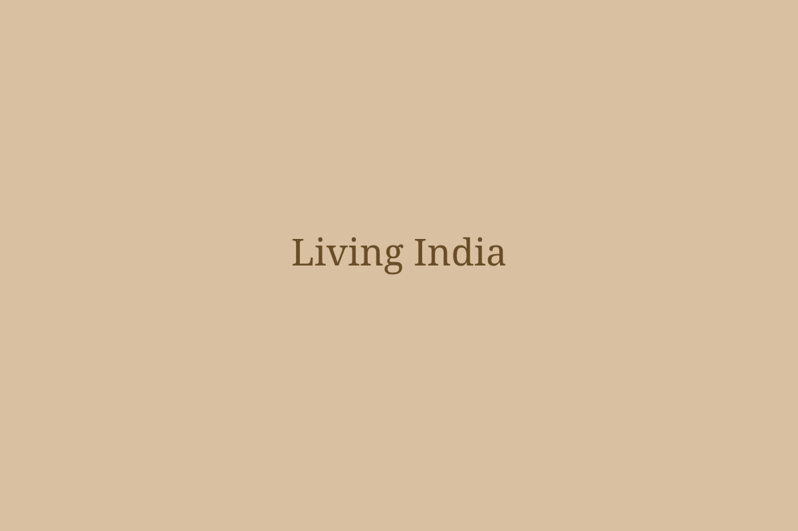

🧑🎨 Meera · Madhubani artistPractitioner ✓
“The same motif can have different meanings between villages. Our community uses this one during wedding paintings.”
Discover the stories, traditions, crafts and memories carried by India's communities — and help preserve them for the next generation.

Move beyond monuments. Find the living traditions, people and stories behind them.
Explore urban planning, drainage, craft workshops, seals and everyday life through an interactive experience.
Discover motifs, techniques and the voices of artists who continue this living tradition.
Listen to community stories and regional variations passed from one generation to another.
Ask, share, discuss and preserve. Contributions from practitioners and communities add context that textbooks cannot.
“The same motif can have different meanings between villages. Our community uses this one during wedding paintings.”
Does anyone know how this tradition changed when natural dyes became harder to find?
Spot traditions with low documentation or declining participation so communities and institutions can focus preservation efforts.
Low digital documentation · Few active practitioners
Strong practice, but limited younger participation